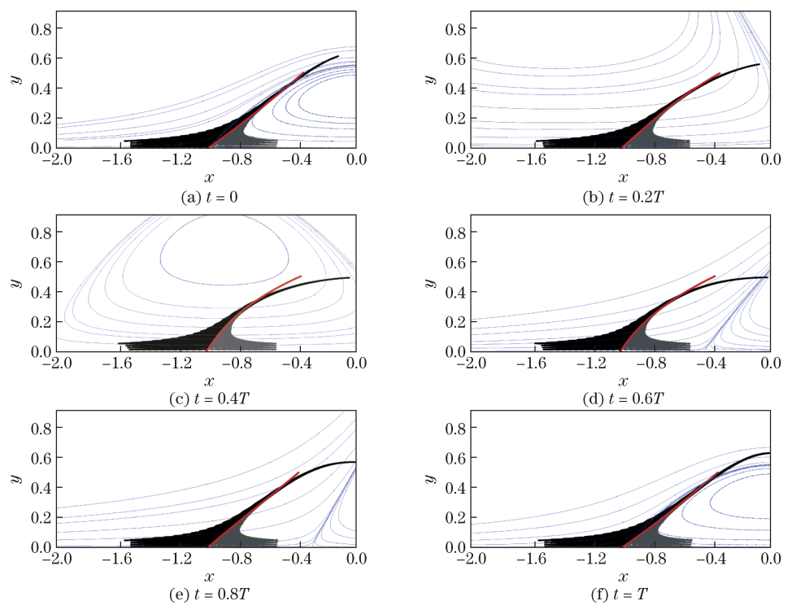
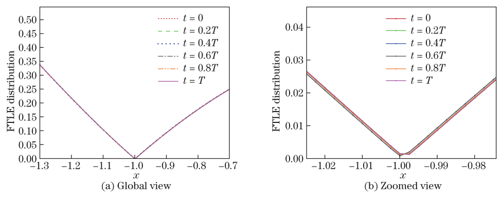
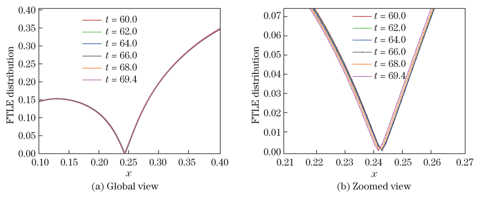
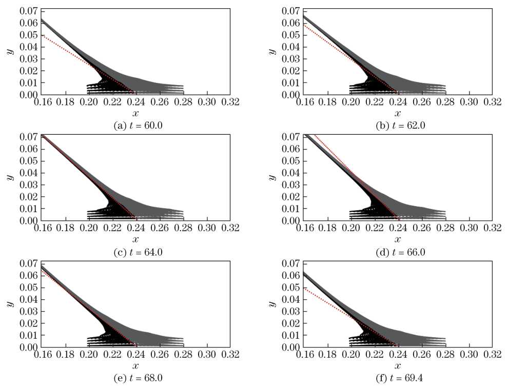

01中文摘要
基于Haller（2004）的加权平均零摩阻原理，提出二维周期流动非定常分离的拉格朗日判据。通过分析有限时间Lyapunov指数（FTLE）沿无滑移壁面的分布，发现周期分离发生在FTLE为零的点。用分离泡的解析解和顶盖驱动方腔流动的数值模拟对该判据进行了验证，表明壁面FTLE零点可仅由有限时间流场数据确定，为周期非定常分离的识别提供了不依赖边界层方程求解的诊断量。
原始摘要（英文/原文）
The present paper proposes a Lagrangian criterion of unsteady flow separation for two-dimensional periodic flows based on the principle of weighted averaging zero skin-friction given by Haller (HALLER, G. Exact theory of unsteady separation for two-dimensional flows. Journal of Fluid Mechanics, 512, 257–311 (2004)). By analyzing the distribution of the finite-time Lyapunov exponent (FTLE) along the no-slip wall, it can be found that the periodic separation takes place at the point of the zero FTLE. This new criterion is verified with an analytical solution of the separation bubble and a numerical simulation of lid-driven cavity flows.
02阅读说明
文章类型：理论分析（Lagrangian 判据推导）＋解析解与数值解验证，非实验论文。材料范围：12 页全文完整（p.1–12），含图 1–9、式 (1)–(26) 与参考文献；bundle 全文已逐页读到 EOF。图表可读性：图件清单给出 9 个条目，正文图注完整；式 (23)、(26) 的文本层有乱码，已用 PDF 第 6、8 页核对，式 (8)–(22) 用 PDF 第 3–5 页核对。信息完整度：判据推导链、两个验证算例与结论齐全；网格量、时间步长、FTLE 计算的 δx/δy 取值与定量误差均未给出。提取口径：只依据 bundle 文本、图注与核对的 PDF 页，不引外部文献结论。 文章类型：期刊
03一句话核心与三句话摘要
对二维周期流提出壁面 FTLE 取零（最小）处即分离点的 Lagrangian 必要判据，并用解析分离泡与方腔流验证。
- 瞬时 Euler 流线无法正确定位非定常分离点；Haller 的加权平均零摩阻判据能给出分离位置，但未说明它在 FTLE 场中对应何处。 AI概括
- 沿无滑移壁面解析变形梯度与 Cauchy–Green 张量，证明周期流分离点满足 λmax=1、壁面 FTLE 为零且沿壁最小，并用 Ghosh 解析分离泡（ω=2π、β=3、T=1）和 Ma=0.3、Re=1200 的周期驱动方腔验证。 原文明确
- 壁面 FTLE 最小点与 Haller 判据给出的分离点一致，但再附点同样满足零 FTLE，需借助条纹线/物质尖峰区分，且判据只适用于时间周期流。 原文明确
04核心内容清单
| 要点 | 类型 | 重要性 | 原文依据 | 属性 |
|---|---|---|---|---|
| 提出新判据：二维周期流的分离点位于壁面 FTLE 的最小点，该点一般满足 σ0T(γ,0)=0。 | 理论判据 | A | p.5，式 (22) 及其后文字 | 原文明确 |
| 判据由 Haller 加权平均零摩阻条件 (5)–(6) 推导而来，是必要条件而非充分条件。 | 理论定位 | A | p.3 式 (5)–(6)；p.5 “Eq. (5) is just a necessary condition” | 原文明确 |
| 壁面变形梯度因 ux=vx=0 而退化为上三角，λmax=1 仅当 a=0 且 0<b≤1。 | 推导关键 | A | p.4 式 (11)、(16)、(18) | 原文明确 |
| 再附点与分离点同样满足零 FTLE，需用条纹线是否形成物质尖峰来区分两者。 | 适用性限制 | A | p.5–6 | 原文明确 |
| 解析分离泡的壁面 FTLE 最小值在 x=−1，且六个起始时刻结果几乎相同。 | 验证结果 | A | p.6–7，Fig.2 | 原文明确 |
| 方腔算例壁面 FTLE 最小值在 x=0.242，与 Haller 判据完全一致。 | 验证结果 | A | p.9，Fig.8 | 原文明确 |
| Euler 意义下分离鞍点在 x=0.194–0.267 间移动，再附鞍点在 x=0.662–0.719 间移动，而 Lagrangian 判据给出固定值 0.242 与 0.693。 | 定量对比 | A | p.8，Fig.7 | 原文明确 |
| 物质尖峰与 Haller 一阶分离剖面 x=γ+y f0(t0) 在壁面附近吻合，支持“固定分离”图像。 | 机理证据 | B | p.10，Fig.9，式 (26) | 原文明确 |
| 判据对不可压周期流与 Ma=0.3 的近可压周期方腔均给出合理结果，作者据此声称可用于可压流。 | 适用范围 | B | p.7、p.11 | AI概括 |
| 作者承认判据仅限时间周期流，一般时间依赖非定常流未处理。 | 局限 | A | p.11 结论 | 原文明确 |
| FTLE 须由后向积分得到，才能揭示分离剖面对应的不稳定流形。 | 方法要点 | B | p.6 | 原文明确 |
| 由于只用到壁面量，原则上可由实验壁面附近的粒子轨迹构造 FTLE 曲线定位分离点；论文未做实验验证。 | 工程意义 | C | p.3、p.5；AI 由判据形式推断 | AI推断 |
05引言：研究问题与领域缺口
非定常分离存在 Euler 与 Lagrangian 两套描述：对周期分离泡，瞬时流线随时间大幅变化，而条纹线给出的物质尖峰起点固定（p.1–2，Fig.1）。已有工作包括 Shariff 等把分离点定义为 Poincaré 映射的不稳定流形不动点并给出时间平均摩阻为零（p.2）；Yuster 与 Hackborn 严格重导近定常周期流的零平均摩阻原理（p.2）；Haller 提出二维非定常分离精确理论——分离发生在加权平均摩阻为零且梯度为负处，对不可压与可压均适用（p.2）；Shadden 等用后向 FTLE 捕捉分离剖面，但未明确壁面分离点，因为壁面分离点是非双曲的而 FTLE 脊线对应双曲轨迹（p.2）；Lei 等用 LCS 捕捉翼型分离剖面、再用 Haller 判据定位（p.2–3）。缺口：FTLE 场中壁面分离点的位置没有被明确指出。目标：分析二维周期流沿壁面的 FTLE 分布，提出“壁面 FTLE 取零（最小）处即分离点”的新 Lagrangian 必要判据，作为 Haller 判据的扩展（p.3）。适用边界：二维、时间周期流；作者声称对不可压与可压流均适用（p.5、p.11）。
06流动条件与几何构型
| 项目 | 数值/描述 | 依据 | 备注 |
|---|---|---|---|
| 流动类型 | 二维、时间周期流；不可压或可压均声称适用 | p.3 §2；p.5；p.11 | 判据本身未限制马赫数，但可压缩性只通过壁面密度体现 |
| 壁面边界条件 | y=0 处 u(x,0,t)=v(x,0,t)=0（无滑移） | p.3，式 (2) | |
| 解析分离泡：速度场参数 | ω=2π，β=3；壁面 y=0 | p.6，式 (23) | 速度场取自 Ghosh 等，形式为 u=−y+3y²+x²y−(2/3)y³+βxy sin(ωt)，v=−xy²−(1/2)βy² sin(ωt) |
| 解析分离泡：周期 | T=1 | p.6 | |
| 解析分离泡：FTLE 计算 | 后向积分 1 个周期；起始时刻 t=0、0.2T、0.4T、0.6T、0.8T、T | p.6，Fig.2 | |
| 方腔几何 | 二维正方形，无量纲边长 L=1；顶盖沿 x 方向运动 | p.7，Fig.3 | |
| 方腔稳态验证工况 1 | Re=100；Ma=0.1；Pr=0.72；顶盖 u=1、v=0 | p.7 | |
| 方腔稳态验证工况 2 | Re=400；Ma=0.1；Pr=0.72；顶盖 u=1、v=0 | p.7 | |
| 方腔稳态验证工况 3 | Re=1000；Ma=0.1；Pr=0.72；顶盖 u=1、v=0 | p.7 | |
| 方腔稳态验证工况 4 | Re=3200；Ma=0.1；Pr=0.72；顶盖 u=1、v=0 | p.7 | |
| 方腔非定常工况 | Re=1200；Ma=0.3；顶盖 u=1+(2/3)sin(2t/3)、v=0 | p.7–8 | |
| 方腔非定常周期 | T=3π | p.8，Fig.5 讨论 | |
| 网格量与时间步长 | 文中未提及 | p.7 §3.2.1；全文未给出 | |
| FTLE 有限差分扰动尺度 δx、δy | 文中未提及具体取值，仅称“choosing δx and δy small enough” | p.6 | |
| 壁温/热流条件 | 文中未提及（等温不可压/近可压方腔，无热边界条件描述） | p.7 §3.2.1 |
07核心现象与关键参数
| 参数 | 定义 | 数值 | 关系/说明 | 依据 |
|---|---|---|---|---|
| a(x0,t0,t) | 壁面加权剪切积分，ρ(x0,0,t0)∫uy/ρ dτ | 随 x0、t0、t 变化；分离点处 a(γ,t0,t0+T)=0 | 式 (16)；进入 Cauchy–Green 张量非对角元 | p.5，式 (16) |
| b(x0,t0,t) | 壁面密度比 ρ(x0,0,t0)/ρ(x0,0,t) | 恒 >0；分离点处 b=1；不可压时恒为 1 | 式 (16)；与 a 共同决定 λmax | p.5，式 (16) |
| λmax | 壁面 Cauchy–Green 张量 C 的最大特征值 | ≥1；λmax=1 仅当 a=0 且 0<b≤1 | 式 (18) | p.5，式 (17)–(18) |
| σt0t（FTLE） | (1/|t−t0|) ln√λmax(C) | 壁面分离点处 σ=0，且沿壁面取最小 | 式 (19)、(21) | p.5，式 (19)–(22) |
| 解析泡分离点位置 | 壁面 FTLE 最小值所在 x | x=−1 | 与 Haller 判据及物质线结果一致 | p.6–7，Fig.2 |
| 方腔分离点位置 | 壁面 FTLE 最小值 / Haller 判据 | x=0.242（无量纲，L=1） | 两者一致 | p.8–9，Fig.7、Fig.8 |
| 方腔再附点位置 | Haller 判据给出的固定再附点 | x=0.693（无量纲，L=1） | 同样满足零 FTLE，需条纹线区分 | p.8–9 |
| Euler 左鞍点移动范围 | 瞬时零壁面摩阻点（分离侧） | x=0.194–0.267 | 随时间移动，与固定分离点 0.242 不同 | p.8，Fig.7 |
| Euler 右鞍点移动范围 | 瞬时零壁面摩阻点（再附侧） | x=0.662–0.719 | 随时间移动，与固定再附点 0.693 不同 | p.8，Fig.7 |
| 分离泡周期 T | 解析速度场周期 | T=1（无量纲） | ω=2π | p.6 |
| 方腔周期 T | 顶盖速度周期 | T=3π（无量纲） | u=1+(2/3)sin(2t/3) | p.8 |
| 雷诺数 | 方腔算例雷诺数 | 稳态验证 100、400、1000、3200；非定常 1200 | 基于 L=1 与顶盖速度 | p.7–8 |
| 马赫数 | 基于壁温与来流体积速度 | 稳态 Ma=0.1；非定常 Ma=0.3 | 用于可压/不可压近似 | p.7 |
| 一阶分离剖面 f0(t0) | Haller 理论给出的分离剖面斜率函数，全部为壁面量 | 由式 (26) 计算；文中未给数值 | 剖面形式 x=γ+y f0(t0) | p.10，式 (26) |
08方法与数据
理论部分从粒子运动方程 (1) 与无滑移边界 (2) 出发，用流映射 (7)、变形梯度 (8) 及其沿轨迹的矩阵微分方程 (9)–(10)；壁面 ux=vx=0 使 (9) 退化为上三角 (11)；连续性方程 (12)–(14) 给出壁面密度沿轨迹的关系；直接积分 (11) 得 (15)，定义 a、b (16)，构造 Cauchy–Green 张量 (17)，得特征值 (18) 与 FTLE 定义 (19)；对周期流由 Haller 判据 (6) 得 a=0、b=1，从而 λmax=1、σ=0（(21)–(22)，p.4–5）。验证一：Ghosh 等解析周期分离泡 (23)，取 ω=2π、β=3、T=1，后向积分一个周期计算壁面 FTLE，起始时刻取 t=0、0.2T、0.4T、0.6T、0.8T、T（p.6，Fig.2）。验证二：二维周期驱动方腔，L=1（Fig.3），求解二维非定常 Navier–Stokes：对流项五阶 WENO、黏性项四阶中心差分、时间项三阶 TVD Runge–Kutta（p.7）；先用 Re=100、400、1000、3200 的稳态解与 Ghia 等基准对比验证代码（Ma=0.1、Pr=0.72、顶盖 u=1、v=0，Fig.4）；非定常工况 Ma=0.3（“practically compressible”）、Re=1200、顶盖 u=1+(2/3)sin(2t/3)、周期 T=3π（p.7–8）；粒子轨迹用四阶 Lagrange 插值速度与四阶 Runge–Kutta 积分 (1)（p.8）；变形梯度用二阶有限差分 (24)–(25) 近似（p.6）。网格量、时间步长、δx/δy 取值与计算不确定度文中未提及。
| 项目 | 内容 | 依据 | 备注 |
|---|---|---|---|
| 控制方程 | 二维粒子运动方程 ẋ=u、ẏ=v；连续性方程 ρt+∇·(ρv)=0 | p.3–4，式 (1)、(12) | 未写出动量方程，验证算例另行求解二维非定常 N–S |
| 理论工具 | 流映射、变形梯度沿轨迹的矩阵微分方程、Cauchy–Green 张量特征值、FTLE | p.4–5，式 (7)–(19) | |
| 判据形式 | 周期流壁面 FTLE 取零/最小处为分离点（必要条件） | p.5，式 (22) | |
| 解析验证算例 | Ghosh 等时间周期分离泡，ω=2π、β=3、T=1 | p.6，式 (23) | |
| 数值离散：对流项 | 五阶 WENO 格式 | p.7 §3.2.1 | |
| 数值离散：黏性项 | 四阶中心有限差分 | p.7 | |
| 数值离散：时间项 | 三阶 TVD Runge–Kutta | p.7 | |
| 代码验证 | Re=100、400、1000、3200 稳态方腔与 Ghia 等数据对比，作者称“excellent agreement” | p.7，Fig.4 | 仅给出 u(y) 与 v(x) 中心线对比，无误差表 |
| 非定常计算设置 | Ma=0.3、Re=1200、顶盖 u=1+(2/3)sin(2t/3)、T=3π | p.7–8 | |
| 粒子轨迹积分 | 速度四阶 Lagrange 插值＋四阶 Runge–Kutta | p.8 | |
| 变形梯度计算 | 二阶有限差分近似式 (24)–(25)，δx、δy 尽可能小 | p.6 | 未给 δ 取值与误差分析 |
| FTLE 积分方向 | 后向积分一个周期（t → t−T） | p.6 | |
| 网格无关性 | 文中未提及（未给网格量、y+ 或网格收敛研究） | p.7 §3.2.1 | |
| 收敛判据 | 以方腔中心 u、v 的时间演化作为数值解收敛指标；并称已获得充分解析的方腔流 | p.8，Fig.5 | 未给残差阈值 |
09核心推导与公式
把 Haller 的“加权平均壁面摩阻为零”判据翻译成壁面 FTLE 的语言：无滑移壁面使变形梯度上三角化，壁面 FTLE 只由加权剪切积分 a 与密度比 b 决定；周期流中 a=0、b=1 恰是 Haller 条件，因此分离点对应 λmax=1 与零 FTLE，并在壁面取最小。
关键假设
- 流场二维，速度 v=(u,v) 足够光滑，粒子轨迹由 ẋ=u、ẏ=v 唯一确定
- 壁面 y=0 满足无滑移 u=v=0
- 周期流周期为 T，且流动在时间上严格周期
- 可压缩性仅通过连续性方程给出的壁面密度沿轨迹变化进入；不可压时 ρ 为常数
- 判据为必要条件：不区分分离点与再附点
推导过程
以二维速度场描述流体粒子运动，壁面取 y=0 且满足无滑移，这是后续壁面简化的前提。
Haller 的分离必要条件写成壁面剪切 uy/ρ 的时间积分有界；对周期流化为整周期积分为零，其 Lagrangian 形式是 ∂x(t0+T;γ,0,t0)/∂y0=0。原文只引用、未重新推导该理论。
流映射 F 把 t0 时刻的初始位置映到 t 时刻位置；其 Jacobian 即变形梯度，对初始位置求导得到沿轨迹的矩阵微分方程，初值为单位阵。
壁面上 ux=vx=0，矩阵微分方程退化为上三角形式，这是全文推导的关键简化：壁面变形梯度不再与流向速度梯度耦合。
连续性方程在壁面退化为 ρt+ρvy=0，积分得密度沿轨迹的指数关系；它把可压缩性引入变形梯度。
把式 (11) 直接积分并用初值 (10)、密度关系 (14)，得到壁面变形梯度的显式上三角形式。
令 a 为加权剪切积分、b 为壁面密度比（恒正），则 C=FTF 为对称正定矩阵 (1, a; a, a²+b²)。
对称正定张量的两个实正特征值如式 (18)；λmax≥1，且仅在 a=0、0<b≤1 时取 1。FTLE 定义为 λmax 的对数除以时间间隔。
定常流分离点满足壁面摩阻为零且其梯度为负；此时 a=0、b=1，对任意时间间隔 λmax=1，故分离点沿壁面 FTLE 最小。
对周期 T，由式 (15) 与 (6) 得 a(γ,t0,t0+T)=0、b=1，故 λmax=1；邻域内 λmax>1，于是分离点沿壁面 FTLE 最小。由于 a、b 与 t0 无关，判据可写为 σ0T(γ,0)=0。
式 (5) 只是必要条件，故式 (22) 也只是必要条件；再附点同样满足 (5)(6)，也给出零 FTLE，需用条纹线观察是否形成物质尖峰来区分。
适用边界：仅适用于时间周期流（作者在 p.11 明确承认）；需至少后向积分一个周期；只给出必要条件，不能单独区分分离与再附；可压缩性仅通过壁面密度进入，未考虑壁面传热或真实气体效应；推导未讨论三维、壁面曲率或非周期强迫；数值验证未给网格与有限差分扰动尺度的定量误差。
10结果：主要发现与关键证据
解析分离泡：壁面 FTLE 在 x=−1 处取最小，且 t=0、0.2T、…、T 六个起始时刻的曲线几乎重合，说明不可压周期流的壁面 FTLE 与起始时刻无关；该位置与 Haller 加权平均零摩阻判据以及 Fig.1 物质线给出的分离点一致（p.6–7，Fig.2）。方腔：一个周期内上部次级涡周期出现和消失、底部两涡周期移动（p.8，Fig.6）；Euler 意义下左鞍点（分离点或再附点）在 x=0.194–0.267 间移动，右鞍点在 x=0.662–0.719 间移动，而 Haller 判据给出固定分离点 x=0.242、再附点 x=0.693（p.8，Fig.7）；壁面 FTLE 最小值位于 x=0.242，与 Haller 判据一致（p.9，Fig.8）；分离点附近物质尖峰与 Haller 理论的一阶分离剖面 x=γ+y f0(t0)（式 (26)）吻合，分离角随时间变化但分离位置固定（p.10，Fig.9）。
| 发现 | 证据 | 证据类型 | 强度 | 位置 | 属性 |
|---|---|---|---|---|---|
| 解析周期分离泡的壁面 FTLE 在 x=−1 处取最小值，据此判定的分离点与 Haller 判据、物质线结果一致。 | Fig.2 全局与局部放大图，最小值位于 x=−1；正文称“A minimal FTLE is located at x = −1” | 解析算例验证 | 强 | p.6–7，Fig.2 | 原文明确 |
| 不可压周期流的壁面 FTLE 分布与起始时刻无关：t=0、0.2T、0.4T、0.6T、0.8T、T 六条曲线几乎重合。 | Fig.2 中六条曲线重叠；正文称“almost the same” | 数值观察 | 强 | p.6–7，Fig.2 | 原文明确 |
| 周期方腔的壁面 FTLE 最小值位于 x=0.242，与 Haller 判据给出的固定分离点完全一致。 | Fig.8 及其正文“a minimum of FTLE at x = 0.242” | 数值验证 | 强 | p.9，Fig.8 | 原文明确 |
| Euler 瞬时零摩阻鞍点在一个周期内移动（分离侧 0.194–0.267，再附侧 0.662–0.719），而 Lagrangian 判据给出固定值 0.242 与 0.693。 | Fig.7(a) 两个鞍点的时间演化；正文给出具体范围 | 定量对比 | 强 | p.8，Fig.7 | 原文明确 |
| 再附点同样满足零 FTLE，因此判据本身不能区分分离与再附，需要条纹线/物质尖峰判别。 | 正文“the reattachment point also gives σ0T(γ,0)=0”；Fig.9 物质尖峰 | 理论边界 | 强 | p.5–6；p.10，Fig.9 | 原文明确 |
| 分离点附近的物质尖峰与 Haller 一阶分离剖面 x=γ+y f0(t0) 吻合，分离角随时间变化但分离位置固定。 | Fig.9 红色虚线与粒子云对比 | 机理证据 | 中 | p.10，Fig.9，式 (26) | 原文明确 |
| 代码在 Re=100–3200 稳态方腔与 Ghia 等基准吻合良好，保证方腔流被充分解析。 | Fig.4 中心线 u、v 剖面与基准数据对比；作者称“excellent agreement” | 代码验证 | 中 | p.7，Fig.4 | 原文明确 |
| 判据在 Ma=0.3 的近可压周期方腔仍成立，支持作者“可用于可压流”的主张，但该算例压缩性较弱。 | 非定常工况 Ma=0.3、Re=1200，Fig.8 结果 | 适用范围证据 | 弱 | p.7–9 | AI推断 |
11机制解释与论证链
【原文明确】无滑移壁面上 ux=vx=0，使壁面变形梯度矩阵成为上三角；其非对角元是加权剪切积分 a，对角元是密度比 b>0。于是 λmax≥1，且只有当 a=0 且 0<b≤1 时才等于 1。【原文明确】对周期流，Haller 的整周期加权摩阻为零条件恰好就是 a=0，因此分离点处 λmax=1、FTLE=0；离开分离点后 a≠0 使 λmax>1，故分离点是壁面 FTLE 的极小点。【AI推断】物理上可理解为：在一个周期内，壁面法向相邻的两条物质线在流向没有净拉伸（加权剪切正负抵消），因而分离点附近既不被持续拉离也不被持续压向壁面，这正是“固定分离”的 Lagrangian 特征；而瞬时 Euler 鞍点会随周期来回移动。
12讨论：结论、贡献与局限
机制链：无滑移壁面使变形梯度上三角化；流向拉伸 ∂x/∂y0 由加权剪切积分 a 控制，b=ρ(t0)/ρ(t)>0 使 λmax≥1，且仅在 a=0、0<b≤1 时 λmax=1；周期流的 Haller 判据 (6) 正对应 a(γ,t0,t0+T)=0，故分离点壁面 FTLE 最小并等于零（p.4–5）。判据只是必要条件：再附点同样满足 (5)(6) 并给出 σ=0，需要借助条纹线/物质尖峰区分（p.5–6）。意义：把 Haller 的加权平均摩阻判据转化为可直接从壁面 FTLE 曲线读取的几何判据，可用于数值或实验后处理定位分离点。局限：仅限时间周期流，一般非定常流留待未来工作（p.11）；必须至少后向积分一个周期；未给出网格、插值与有限差分误差的定量不确定度；可压缩性只通过壁面密度 ρ 进入，验证算例 Ma=0.3 压缩性较弱。
作者结论
作者提出并验证了一个基于壁面 FTLE 的二维周期流非定常分离 Lagrangian 必要判据：分离发生在壁面 FTLE 为零（沿壁最小）的点。该判据是 Haller 加权平均零摩阻判据的扩展，可用于定位分离点并补充 FTLE 场的信息；用解析分离泡和驱动方腔数值解作了验证。作者明确其只适用于时间周期流，一般非定常流的判据留待未来工作（p.11）。
主要贡献
- 把 Haller 的加权平均零壁面摩阻判据转化为壁面 FTLE 的零值/极小值判据，使分离点可直接从 FTLE 曲线读取。
- 给出壁面变形梯度上三角化及 a、b 两个标量控制 λmax 与 FTLE 的解析结构。
- 用解析周期分离泡和周期驱动方腔两个算例验证，分离位置与 Haller 判据定量一致（x=0.242、x=0.693）。
- 指出再附点同为零 FTLE 点，并给出用条纹线/物质尖峰区分的操作方式。
局限与未解决问题
作者承认：判据仅限时间周期流，一般时间依赖非定常流未处理（p.11）；判据只是必要条件，不能单独区分分离与再附。材料显示的其他局限：壁面 FTLE 需后向积分整周期，计算成本与存储较高；数值部分未给网格量、时间步长、δx/δy 与 FTLE 误差，无法评估数值不确定度；方腔算例 Ma=0.3 压缩性弱，“对可压流适用”缺少强压缩/高焓验证；未考虑壁面传热、真实气体与三维效应；未做实验验证。
13对高速流动与工程的意义
对高速流动的价值在于提供一个纯运动学的分离点定位工具：只要能从数值或实验获得壁面附近一个周期内的粒子轨迹，即可构造壁面 FTLE 曲线并读取极小点，避免瞬时流线/摩阻零点随周期漂移带来的误判（p.1–2、p.8）。这对非定常分离泡、周期性激波/边界层干扰、进气道与叶栅等周期主导流动的分离位置辨识有方法借鉴意义（AI 推断）。但它不能回答分离的因果机制、分离泡长度随时间演化或三维/湍流效应；用于可压缩高焓流动前需在强压缩条件下重新验证。
14核心图件




15可引用原文素材
| 原文短句 | 可支持的观点 | 位置 | 使用建议 |
|---|---|---|---|
| “flow separation occurs at the location of the minimal FTLE” | 论文核心判据的原始表述 | p.6 | 引用判据时作为定义句 |
| “the separation point of a periodic flow admits a minimal FTLE along the wall” | 周期流分离点的 FTLE 极小性质 | p.5 | 推导结论的引用 |
| “Eq. (5) is just a necessary condition for separation” | 判据只是必要条件，不能区分分离/再附 | p.5 | 讨论适用边界时引用 |
| “this criterion is restricted to time-periodic flows” | 作者自认的适用范围限制 | p.11 | 批评性引用或未来工作铺垫 |
| “the location of separation remains fixed at x = 0.242” | Lagrangian 判据给出固定分离点，区别于移动的 Euler 鞍点 | p.8 | 与 Euler 描述对比时引用 |
| “the reattachment point remains fixed at x = 0.693” | 再附点同样由 Lagrangian 判据固定 | p.8 | 说明再附点零 FTLE 的来源 |
| “a material spike will form” | 分离点的可观察运动学特征 | p.6 | 解释如何区分分离与再附 |
| “it is independent of the starting time for an incompressible periodic flow” | 不可压周期流的壁面 FTLE 分布与起始时刻无关 | p.6 | 说明判据无需固定起始相位，便于实际应用 |
16最终核验
| 核验项 | 结论 |
|---|---|
| 仅基于全文 | 是。仅使用 bundle 全文、图件清单图注，并用 PDF 第 3–8 页核对式 (3)–(26) 的符号与上下标；未引用外部文献结论。 |
| A 级要点有依据 | 是。A 级要点（判据式 (22)、必要条件定位、上三角简化、x=−1、x=0.242、0.194–0.267/0.662–0.719、再附点歧义、周期流限制）均有正文页码与图号对应。 |
| 属性标注 | 是。逐条标注【原文明确】/【AI概括】/【AI推断】；机制段与意义段中推断内容已单独标出。 |
| 覆盖范围 | 全文 12 页逐页读到 EOF；覆盖摘要、引言、第 2 节推导、第 3 节两个验证算例、第 4 节结论；参考文献未逐条精读。 |
| 无编造 | 是。未编造页码、图号或数据；网格量、时间步长、δx/δy、误差量级等缺失项均写“文中未提及”。 |
需回原文确认
- 方腔计算的网格量、时间步长与 FTLE 有限差分 δx/δy 取值未给出，壁面 FTLE 极小点的数值误差有多大？
- 判据只给出必要条件，实际使用中若壁面同时存在多个零 FTLE 点，如何自动区分分离与再附？
- 作者称可压流适用，但只验证 Ma=0.3；在强激波、高焓或壁面传热条件下，壁面密度比 b 的强变化是否会破坏“λmax=1 唯一对应分离点”的结论？
- 对三维或非周期强迫流，壁面 FTLE 极小判据是否仍成立？
- 式 (26) 的 f0(t0) 在实际数据中如何稳定计算？文中未给数值结果。
- 能否用实验壁面粒子轨迹（如 PIV/条纹线）构造足够光滑的壁面 FTLE 曲线以复现该判据？
17关联文献
依据标签、板块、构型与作者脉络自动关联，可据此追踪同一问题的前序与后续工作。
18引用格式
选择期刊风格后复制；出处保留原刊名。BibTeX 可直接用于 LaTeX。
引用格式
Han, S., Zhang, S. & Zhang, H. 2018 A Lagrangian criterion of unsteady flow separation for two-dimensional periodic flows. Applied Mathematics and Mechanics 39 (7), 1007–1018. https://doi.org/10.1007/s10483-018-2350-8
PDF上传 PDF 并更新本页
本页缺少全文、摘要或图件时，可在浏览器本地补入 PDF。解析完全在本机完成，不上传网络；完成后会更新本页的 PDF 打开链接、原摘要、IMRaD 机器抽取、关键句与含图页面。复杂的公式语义与中文深度解读仍以原文和既有精读记录为准。